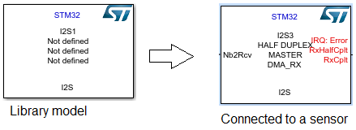
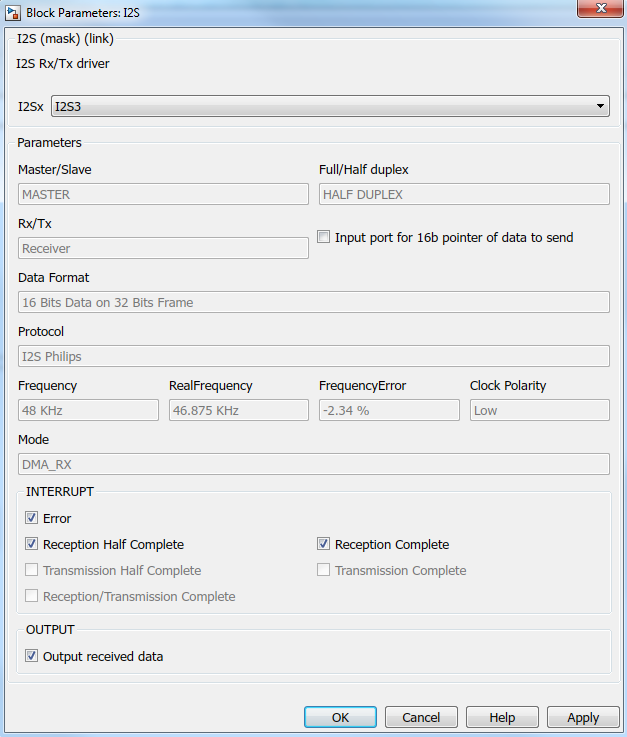

I2S
STM32 I2S driver based on the HAL library.
Contents
S-Function
This model is used to manage I2S communication depending on STM32CubeMX configuration.
In Full duplex mode, the peripheral is able to send and receive at same time.
In Half duplex mode, peripheral is able to send or receive only.
In Master mode, peripheral provides communication clock and in Slave mode, communication clock is provided by material connected to the peripheral.
Some examples:
- Sensors : STM32 is configured Half duplex - Master - Receiver when it is used to get data (no write)
- LCD : STM32 is configured Half duplex - Master - Transmitter when it is used to send data (no read)
- MCU : STM32 is configured as Full duplex when it is used to communicate with an MCU.

1. Full Duplex
Nb Input: 1 or 2
- Nb2Send_Rcv : number of data to send = number of data to receive
- ptDataSend : Pointer to data to send = Address of buffer (optional)
Nb Output: 2 or 3 in polling mode only
- NbRcv : number of received data
- ptDataRcv : Pointer to data received = Buffer address
- DataRcv : Array of received values (optional)
2. Half Duplex - Master - Receiver
Nb Input: 1 or 2
- Nb2Rcv : number of data to receive
- ptDataSend : Pointer to data to send = Address of buffer (optional)
Nb Output: 2 or 3 in polling mode only
- NbRcv : number of received data
- ptDataRcv : Pointer to data received = Buffer address
- DataRcv : Array of received values (optional)
3. Half Duplex - Master - Transmitter
Nb Input: 1 or 2
- Nb2Send_Rcv : number of data to send = number of data to receive
- ptDataSend : Pointer to data to send = Address of buffer (optional)
Nb Output: 1 in polling mode only
- NbSent : number of data sent
4. Half Duplex - Slave - Receiver
Nb Input: 1
- Nb2Rcv : number of data to receive
Nb Output: 2 or 3 in polling mode only
- NbRcv : number of received data
- ptDataRcv : Pointer to data received = Buffer address
- DataRcv : Array of received values (optional)
5. Half Duplex - Slave - Transmitter
Nb Input: 1 or 2
- Nb2Send : number of data to send
- ptDataSend : Pointer to data to send = Address of buffer (optional)
Nb Output: 1 in polling mode only
- NbSent : number of data sent
I2S Block Parameters

Some parameters are used to select features:
- I2Sx : Name of the I2S channel used.
- Input port for 16b pointer of data to send : Select it to validate second optional input named ptDataSend. It is the address of data value to send.
- Interrupt : When DMA or interrupt mode has been configured from STM32CubeMx it is possible to select interrupt that will be processed.
- Output received data : Select it to validate the output of array of received values.
- Timeout (Nb solver ticks) : In polling mode only To give timeout for I2S communication. This number of solver loop will be converted in second and written in Timeout value (sec) parameter.
Other parameters are information from STM32CubeMx for the I2S selected:
- MASTER/SLAVE : Mode of the device. Master provide clock
- Full/Half duplex : Full duplex to be able to send and receive at same time. Half duplex to send or receive only.
- Rx/Tx : Configured as receiver or transmitter
- Protocol - Data Format - Frequency - RealFrequency - FrequencyError - Clock Polarity : Selected communication protocol parameters.